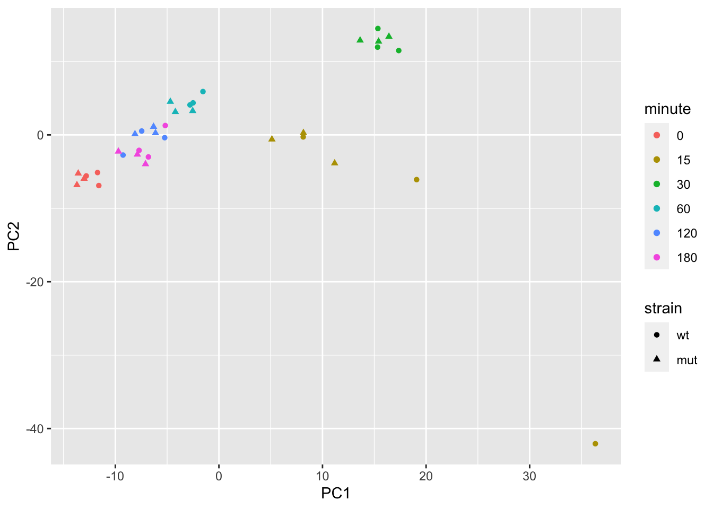
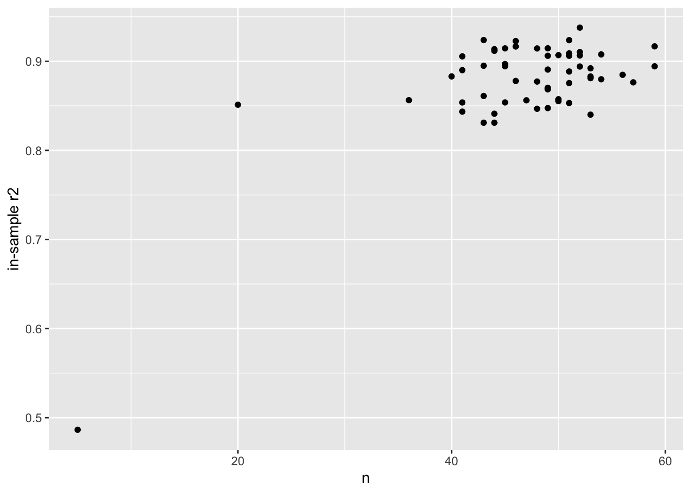

Chapter 8 Many models
library(fission)
data(fission)
se <- fission
colData(se)## DataFrame with 36 rows and 4 columns
## strain minute replicate id
## <factor> <factor> <factor> <character>
## GSM1368273 wt 0 r1 wt_0_r1
## GSM1368274 wt 0 r2 wt_0_r2
## GSM1368275 wt 0 r3 wt_0_r3
## GSM1368276 wt 15 r1 wt_15_r1
## GSM1368277 wt 15 r2 wt_15_r2
## ... ... ... ... ...
## GSM1368304 mut 120 r2 mut_120_r2
## GSM1368305 mut 120 r3 mut_120_r3
## GSM1368306 mut 180 r1 mut_180_r1
## GSM1368307 mut 180 r2 mut_180_r2
## GSM1368308 mut 180 r3 mut_180_r3We again use tidybulk to filter to abundant genes and scale counts for library size:
library(tidybulk)
se <- se %>%
keep_abundant(factor_of_interest = strain) %>%
scale_abundance()
assayNames(se)## [1] "counts" "counts_scaled"We make a PCA plot of the log scaled counts, to get a sense for how the samples vary. Note that minute 0 and 180 are similar, as the cells have not yet responded to the stimulus at minute 0. We will later remove these samples for simple modeling.
pca <- se %>%
reduce_dimensions(method="PCA")## Getting the 500 most variable genes## Fraction of variance explained by the selected principal components## # A tibble: 2 × 2
## `Fraction of variance` PC
## <dbl> <int>
## 1 0.293 1
## 2 0.182 2## tidybulk says: to access the raw results do `attr(..., "internals")$PCA`library(ggplot2)
pca %>%
pivot_sample() %>%
ggplot(aes(PC1, PC2, shape=strain, color=minute)) +
geom_point()
Using tidySummarizedExperiment, we compute logcounts and then
center and scale these values. Likewise, we turn the minute variable
from a factor into a numeric, and scale from 0 to 1. These changes
will help us compare coefficients across gene later.
library(tidySummarizedExperiment)
se <- se %>%
mutate(logcounts = log2(counts_scaled + 1),
logcounts = (logcounts - mean(logcounts))/sd(logcounts))
se <- se %>%
mutate(time = as.numeric(as.character(minute)) / 180)
se## # A SummarizedExperiment-tibble abstraction: 210,996 × 20
## # [90mFeatures=5861 | Samples=36 | Assays=counts, counts_scaled, logcounts[0m
## .feature .sample counts count…¹ logco…² strain minute repli…³ id TMM multi…⁴ time symbol
## <chr> <chr> <int> <dbl> <dbl> <fct> <fct> <fct> <chr> <dbl> <dbl> <dbl> <chr>
## 1 SPAC212.09c GSM136… 23 23.1 -1.70 wt 0 r1 wt_0… 1.18 1.00 0 SPAC2…
## 2 SPAC212.04c GSM136… 37 37.1 -1.42 wt 0 r1 wt_0… 1.18 1.00 0 SPAC2…
## 3 SPAC977.11 GSM136… 155 155. -0.581 wt 0 r1 wt_0… 1.18 1.00 0 SPAC9…
## 4 SPAC977.13c GSM136… 19 19.0 -1.81 wt 0 r1 wt_0… 1.18 1.00 0 SPAC9…
## 5 SPAC977.15 GSM136… 91 91.2 -0.896 wt 0 r1 wt_0… 1.18 1.00 0 SPAC9…
## 6 SPAC977.16c GSM136… 184 184. -0.479 wt 0 r1 wt_0… 1.18 1.00 0 dak2
## 7 SPNCRNA.607 GSM136… 49 49.1 -1.26 wt 0 r1 wt_0… 1.18 1.00 0 SPNCR…
## 8 SPAC1F8.06 GSM136… 105 105. -0.812 wt 0 r1 wt_0… 1.18 1.00 0 fta5
## 9 SPAC1F8.08 GSM136… 151 151. -0.597 wt 0 r1 wt_0… 1.18 1.00 0 SPAC1…
## 10 SPAC11D3.19 GSM136… 22 22.1 -1.72 wt 0 r1 wt_0… 1.18 1.00 0 SPAC1…
## # … with 40 more rows, 7 more variables: biotype <fct>, .abundant <lgl>, seqnames <fct>,
## # start <int>, end <int>, width <int>, strand <fct>, and abbreviated variable names
## # ¹counts_scaled, ²logcounts, ³replicate, ⁴multiplierFor demonstration, we will work with just the first chromosome: I.
For our task of modeling the design using gene expression, in blocks along the genome, we need to create tiles to determine which genes to group together. To do so, we need to know how long the chromosomes are. The original publication states:
Sequencing reads were aligned to the fission yeast genome (PomBase database release 11)
Usually we would look for the length of chromosomes from a source that
hosts the reference (e.g. UCSC genome lengths can be obtained using
Seqinfo). In this case, I wasn’t able to find information about this
particular release, so I just guess the length of the chromosome using
the gene with the largest coordinate:
library(plyranges)
rowRanges(se) %>%
filter(seqnames == "I") %>%
summarize(max(end))## DataFrame with 1 row and 1 column
## max.end.
## <integer>
## 1 5556768genes_to_keep <- rowRanges(se) %>%
filter(seqnames == "I") %>%
names()We now filter the se object to remove the 0 time point, and to
keep just the features on chromosome I.
se0 <- se # save the original object
se <- se %>%
filter(time != 0) %>%
filter(.feature %in% genes_to_keep)To make tiles on chromosome I, we just need to specify the extent (here I plug in the largest gene coordinate):
tiles <- data.frame(seqnames="I",start=1,end=5.6e6) %>%
as_granges() %>%
tile_ranges(width=1e5) %>%
select(-partition) %>%
mutate(tile = seq_along(.))
tiles## GRanges object with 56 ranges and 1 metadata column:
## seqnames ranges strand | tile
## <Rle> <IRanges> <Rle> | <integer>
## [1] I 1-100000 * | 1
## [2] I 100001-200000 * | 2
## [3] I 200001-300000 * | 3
## [4] I 300001-400000 * | 4
## [5] I 400001-500000 * | 5
## ... ... ... ... . ...
## [52] I 5100001-5200000 * | 52
## [53] I 5200001-5300000 * | 53
## [54] I 5300001-5400000 * | 54
## [55] I 5400001-5500000 * | 55
## [56] I 5500001-5600000 * | 56
## -------
## seqinfo: 1 sequence from an unspecified genome; no seqlengthsWe now determine which tile the genes fall in (using TSS only, so that genes fall in a single tile).
ranges_tiled <- rowRanges(se) %>%
anchor_5p() %>%
mutate(width=1) %>%
join_overlap_left(tiles) %>%
select(tile, .drop_ranges=TRUE)
nrow(se) == nrow(ranges_tiled)## [1] TRUErowData(se) <- cbind(rowData(se), ranges_tiled)Typically we have a little less than 50 genes per tile:
summary(as.vector(table(rowData(se)$tile)))## Min. 1st Qu. Median Mean 3rd Qu. Max.
## 5.00 44.00 49.00 46.98 51.25 59.00Next, we want to create a nested table, where tidySE (shortened
name for tidySummarizedExperiment) objects are grouped by tile and
placed within a column of the table. There are a few choices on how to
proceed. One option would be to pivot_wider the tidySE, as in this
chunk below:
se %>%
filter(.feature %in% rownames(se)[1:5]) %>%
select(.sample, strain, time, .feature, logcounts) %>%
pivot_wider(names_from = .feature, values_from = logcounts)## tidySummarizedExperiment says: A data frame is returned for independent data analysis.## # A tibble: 30 × 8
## .sample strain time SPAC212.09c SPAC212.04c SPAC977.11 SPAC977.13c SPAC977.15
## <chr> <fct> <dbl> <dbl> <dbl> <dbl> <dbl> <dbl>
## 1 GSM1368276 wt 0.0833 -1.30 -1.51 -0.705 -1.85 -0.617
## 2 GSM1368277 wt 0.0833 -1.03 -2.01 -1.19 -1.27 -0.677
## 3 GSM1368278 wt 0.0833 -0.993 -2.11 -1.13 -1.88 -0.364
## 4 GSM1368279 wt 0.167 -0.802 -1.40 -0.690 -0.324 -0.966
## 5 GSM1368280 wt 0.167 -0.574 -1.06 -0.847 -0.399 -0.835
## 6 GSM1368281 wt 0.167 -0.685 -0.880 -0.685 -0.571 -0.779
## 7 GSM1368282 wt 0.333 -0.744 -1.56 -1.10 -1.45 -1.45
## 8 GSM1368283 wt 0.333 -0.959 -1.58 -0.910 -0.828 -1.11
## 9 GSM1368284 wt 0.333 -0.832 -1.51 -0.874 -1.07 -1.01
## 10 GSM1368285 wt 0.667 -1.03 -1.49 -0.866 -1.74 -1.40
## # … with 20 more rowsThis ends up being a bit slower than just extracting the information
with assay and transposing it.
library(purrr)
nested <- se %>%
nest(data = -tile) %>%
mutate(trainx = map(data, \(d) {
t(assay(d, "logcounts"))
}))
nested## # A tibble: 56 × 3
## tile data trainx
## <int> <list> <list>
## 1 1 <RngdSmmE[,30]> <dbl [30 × 20]>
## 2 2 <RngdSmmE[,30]> <dbl [30 × 54]>
## 3 3 <RngdSmmE[,30]> <dbl [30 × 41]>
## 4 4 <RngdSmmE[,30]> <dbl [30 × 54]>
## 5 5 <RngdSmmE[,30]> <dbl [30 × 44]>
## 6 6 <RngdSmmE[,30]> <dbl [30 × 53]>
## 7 7 <RngdSmmE[,30]> <dbl [30 × 45]>
## 8 8 <RngdSmmE[,30]> <dbl [30 × 47]>
## 9 9 <RngdSmmE[,30]> <dbl [30 × 41]>
## 10 10 <RngdSmmE[,30]> <dbl [30 × 59]>
## # … with 46 more rowsWe fit an elastic net model:
library(glmnet)
y <- colData(se)$time
nested <- nested %>%
mutate(fit = map(trainx, \(x) {
glmnet(x = x, y = y, alpha = .5, lambda = .1)
}))
nested## # A tibble: 56 × 4
## tile data trainx fit
## <int> <list> <list> <list>
## 1 1 <RngdSmmE[,30]> <dbl [30 × 20]> <elnet>
## 2 2 <RngdSmmE[,30]> <dbl [30 × 54]> <elnet>
## 3 3 <RngdSmmE[,30]> <dbl [30 × 41]> <elnet>
## 4 4 <RngdSmmE[,30]> <dbl [30 × 54]> <elnet>
## 5 5 <RngdSmmE[,30]> <dbl [30 × 44]> <elnet>
## 6 6 <RngdSmmE[,30]> <dbl [30 × 53]> <elnet>
## 7 7 <RngdSmmE[,30]> <dbl [30 × 45]> <elnet>
## 8 8 <RngdSmmE[,30]> <dbl [30 × 47]> <elnet>
## 9 9 <RngdSmmE[,30]> <dbl [30 × 41]> <elnet>
## 10 10 <RngdSmmE[,30]> <dbl [30 × 59]> <elnet>
## # … with 46 more rowsWe use the elastic net model, to predict the design from the gene expression (a variable number and set of genes per tile):
nested <- nested %>%
mutate(
pred = map2(trainx, fit, \(tr,fit) {
predict(fit, newx = tr)[,1]
}),
n = map_dbl(data, nrow),
in_r2 = map_dbl(pred, \(pred) cor(pred,y)^2)
)
nested## # A tibble: 56 × 7
## tile data trainx fit pred n in_r2
## <int> <list> <list> <list> <list> <dbl> <dbl>
## 1 1 <RngdSmmE[,30]> <dbl [30 × 20]> <elnet> <dbl [30]> 20 0.851
## 2 2 <RngdSmmE[,30]> <dbl [30 × 54]> <elnet> <dbl [30]> 54 0.908
## 3 3 <RngdSmmE[,30]> <dbl [30 × 41]> <elnet> <dbl [30]> 41 0.906
## 4 4 <RngdSmmE[,30]> <dbl [30 × 54]> <elnet> <dbl [30]> 54 0.880
## 5 5 <RngdSmmE[,30]> <dbl [30 × 44]> <elnet> <dbl [30]> 44 0.912
## 6 6 <RngdSmmE[,30]> <dbl [30 × 53]> <elnet> <dbl [30]> 53 0.892
## 7 7 <RngdSmmE[,30]> <dbl [30 × 45]> <elnet> <dbl [30]> 45 0.894
## 8 8 <RngdSmmE[,30]> <dbl [30 × 47]> <elnet> <dbl [30]> 47 0.856
## 9 9 <RngdSmmE[,30]> <dbl [30 × 41]> <elnet> <dbl [30]> 41 0.890
## 10 10 <RngdSmmE[,30]> <dbl [30 × 59]> <elnet> <dbl [30]> 59 0.894
## # … with 46 more rowsFinally we plot the prediction \(R^2\), and compare to the number of genes in the models:
library(ggplot2)
ggplot(nested, aes(n, in_r2)) +
geom_point() +
ylab("in-sample r2")